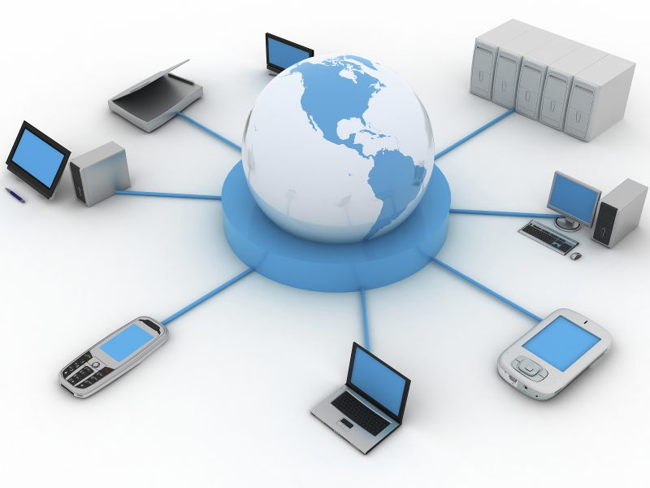
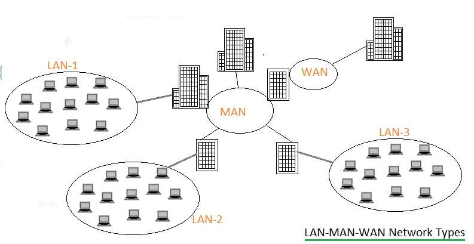
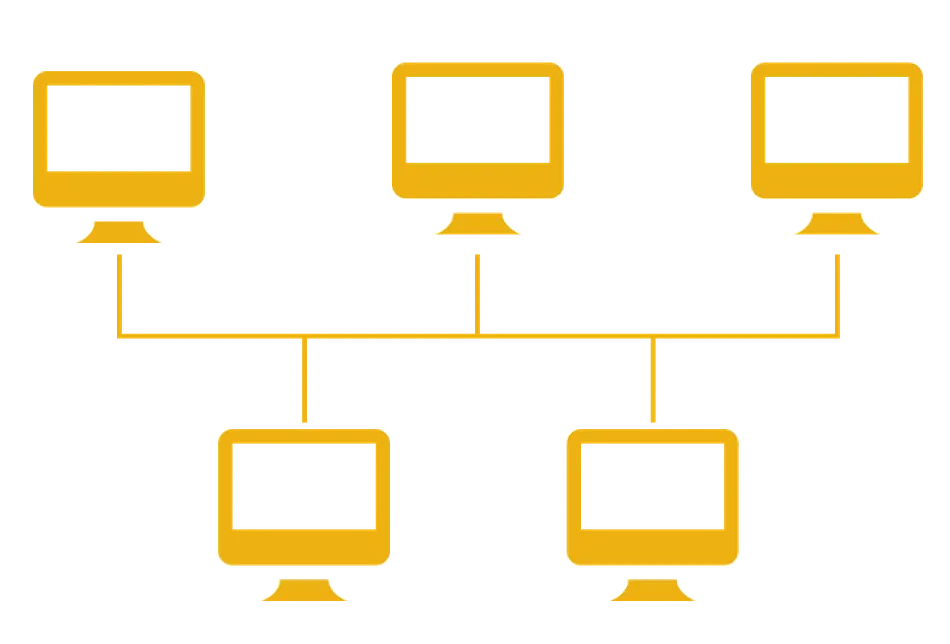
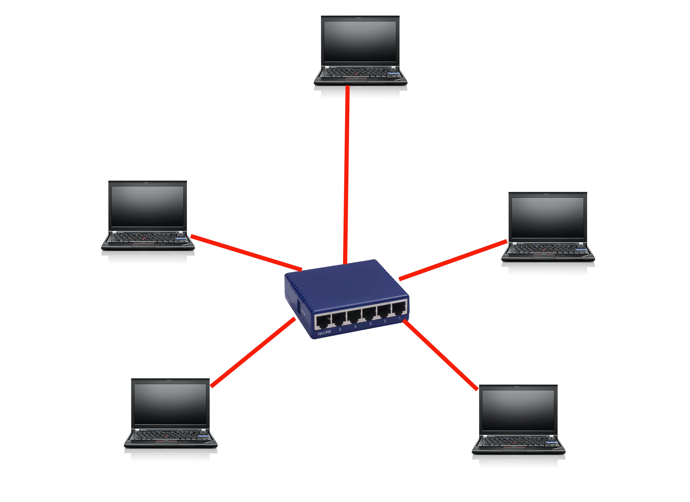
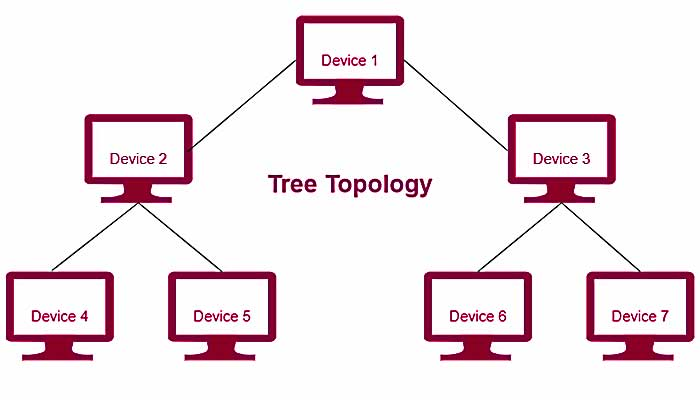
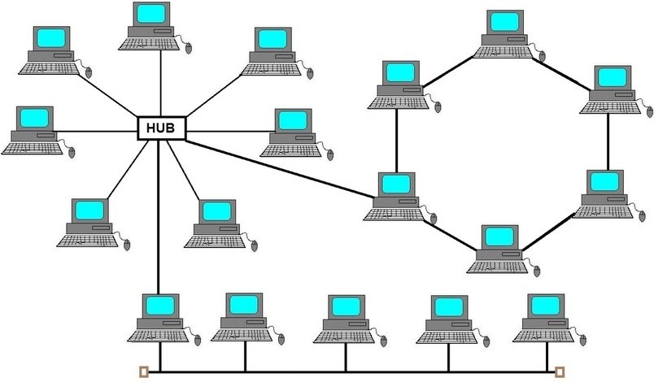

ระบบเครือข่ายคอมพิวเตอร์เบื้องต้น

อ้างอิงรูปภาพ : https://blog.ipleaders.in/
ระบบเครือข่ายคอมพิวเตอร์ ( Computer Network ) หมายถึง การเชื่อมต่อคอมพิวเตอร์ตั้งแต่ 2 เครื่องขึ้นไปเข้าด้วยกันด้วยสายเคเบิล หรือสื่ออื่นๆ ทำให้คอมพิวเตอร์สามารถรับส่งข้อมูลแก่กันและกันได้ในกรณีที่เป็นการ
เชื่อมต่อระหว่างเครื่องคอมพิวเตอร์หลายๆ เครื่องเข้ากับเครื่องคอมพิวเตอร์ขนาดใหญ่ที่เป็นศูนย์กลาง เราเรียกคอมพิวเตอร์ที่เป็นศูนย์กลางนี้ว่า โฮสต์ (Host) และเรียกคอมพิวเตอร์ขนาดเล็กที่เข้ามาเชื่อมต่อว่า ไคลเอนต์(Client) ระบบเครือข่าย (Network) จะเชื่อมโยงคอมพิวเตอร์เข้าด้วยกันเพื่อการติดต่อสื่อสาร เราสามารถส่งข้อมูลภายในอาคาร หรือข้ามระหว่างเมืองไปจนถึงอีกซีกหนึ่งของโลก ซึ่งข้อมูลต่าง ๆ อาจเป็นทั้งข้อความ รูปภาพ เสียง
ก่อให้เกิดความสะดวก รวดเร็วแก่ผู้ใช้ ซึ่งความสามารถเหล่านี้ทำให้เครือข่ายคอมพิวเตอร์มีความสำคัญ และจำเป็นต่อการใช้งานในแวดวงต่าง ๆ

1. LAN (Local Area Network)
ระบบเครื่องข่ายท้องถิ่น เป็นเน็ตเวิร์กในระยะทางไม่เกิน 10 กิโลเมตร ไม่ต้องใช้โครงข่ายการสื่อสารขององค์การโทรศัพท์ คือจะเป็นระบบเครือข่ายที่อยู่ภายในอาคารเดียวกันหรือต่างอาคาร ในระยะใกล้ๆ2. MAN (Metropolitan Area Network) ระบบเครือข่ายเมือง เป็นเน็ตเวิร์กที่จะต้องใช้โครงข่ายการสื่อสารขององค์การโทรศัพท์ หรือการสื่อสารแห่งประเทศไทย เป็นการติดต่อกันในเมือง เช่น เครื่องเวิร์กสเตชั่นอยู่ที่สุขุมวิท มีการติดต่อสื่อสารกับเครื่องเวิร์กสเตชั่นที่บางรัก
3. WAN (Wide Area Network) ระบบเครือข่ายกว้างไกล หรือเรียกได้ว่าเป็น World Wide ของระบบเน็ตเวิร์ก โดยจะเป็นการสื่อสารในระดับประเทศ ข้ามทวีปหรือทั่วโลก จะต้องใช้มีเดีย(Media) ในการสื่อสารขององค์การโทรศัพท์ หรือการสื่อสารแห่งประเทศไทย (คู่สายโทรศัพท์ dial-up / คู่สายเช่า Leased line / ISDN) (lntegrated Service Digital Network สามารถส่งได้ทั้งข้อมูล เสียง และภาพในเวลาเดียวกัน)

1. โทโปโลยีแบบบัสเป็นโทโปโลยีที่ได้รับความนิยมใช้กันมากที่สุดมาตั้งแต่อดีตจนถึงปัจจุบัน ลักษณะการทำงานของเครือข่าย โทโปโลยีแบบบัส คืออุปกรณ์ทุกชิ้นหรือโหนดทุกโหนด ในเครือข่ายจะต้องเชื่อมโยงเข้ากับสายสื่อสารหลักที่เรียกว่า”บัส” (BUS) เมื่อโหนดหนึ่งต้องการจะส่งข้อมูลไปให้ยังอีกโหนด หนึ่งภายในเครือข่าย จะต้องตรวจสอบให้แน่ใจก่อนว่าบัสว่างหรือไม่ ถ้าหากไม่ว่างก็ไม่สามารถจะส่งข้อมูลออกไปได้ ทั้งนี้เพราะสายสื่อสารหลักมีเพียงสายเดียว ในกรณีที่มีข้อมูลวิ่งมาในบัส ข้อมูลนี้จะวิ่งผ่านโหนดต่างๆ ไปเรื่อยๆ ในขณะที่แต่ละโหนดจะคอยตรวจสอบข้อมูลที่ผ่านมาว่าเป็นของตนเองหรือไม่ หากไม่ใช่ ก็จะปล่อยให้ข้อมูลวิ่งผ่านไป แต่หากเลขที่อยู่ปลายทาง ซึ่งกำกับมากับข้อมูลตรงกับเลขที่อยู่ของของตน โหนดนั้นก็จะรับข้อมูลเข้าไป
ข้อดี
1. ใช้สายส่งข้อมูลน้อยและมีรูปแบบที่ง่ายในการติดตั้ง ทำให้ลดค่าใช้จ่ายในการติดตั้งและบำรุงรักษา
2. สามารถเพิ่มอุปกรณ์ชิ้นใหม่เข้าไปในเครือข่ายได้ง่าย
ข้อเสีย
1. ในกรณีที่เกิดการเสียหายของสายส่งข้อมูลหลัก จะทำให้ทั้งระบบทำงานไม่ได้
2. การตรวจสอบข้อผิดพลาดทำได้ยาก ต้องทำจากหลาย ๆจุด

2.โทโปโลยีแบบดาวโทโปโลยีแบบดาว (Star Topology) เป็นรูปแบบที่เครื่องคอมพิวเตอร์ทุกเครื่องที่เชื่อมต่อเข้าด้วยกันในเครือ ข่าย จะต้องเชื่อมต่อกับอุปกรณ์ตัวกลางตัวหนึ่งที่เรียกว่า ฮับ (HUB) หรือสวิตช์ (Switch) หรือเครื่อง ๆ หนึ่ง ซึ่งทำหน้าที่เป็นศูนย์กลางของการเชื่อมต่อสายสัญญาญที่มาจากเครื่องต่าง ๆ ในเครือข่าย และควบคุมเส้นทางการสื่อสาร ทั้งหมด เมื่อมีเครื่องที่ต้องการส่งข้อมูลไปยังเครื่องอื่น ๆ ที่ต้องการในเครือข่าย เครื่องนั้นก็จะต้องส่งข้อมูลมายัง HUB หรือเครื่องศูนย์กลางก่อน แล้ว HUB ก็จะทำหน้าที่กระจายข้อมูลนั้นไปในเครือข่ายต่อไป
ข้อดี
การติดตั้งเครือข่ายและการดูแลรักษาทำ ได้ง่าย หากมีเครื่องใดเกิดความเสียหาย ก็สามารถตรวจสอบได้ง่าย และศูนย์ กลางสามารถตัดเครื่องที่เสียหายนั้นออกจากการสื่อสาร ในเครือข่ายได้เลย โดยไม่มีผลกระทบกับระบบเครือข่าย
ข้อเสีย
เสียค่าใช้จ่ายมาก ทั้งในด้านของเครื่องที่จะใช้เป็น เครื่องศูนย์กลาง หรือตัว HUB เอง และค่าใช้จ่ายในการติดตั้งสายเคเบิลในเครื่องอื่น ๆ ทุกเครื่อง การขยายระบบให้ใหญ่ขึ้นทำได้ยาก เพราะการขยายแต่ละครั้ง จะต้องเกี่ยวเนื่องกับเครื่องอื่นๆ ทั้งระบบ

เป็นรูปแบบที่ เครื่องคอมพิวเตอร์ทุกเครื่องในระบบเครือข่าย ทั้งเครื่องที่เป็นผู้ให้บริการ( Server) และ เครื่องที่เป็นผู้ขอใช้บริการ(Client) ทุกเครื่องถูกเชื่อมต่อกันเป็นวงกลม ข้อมูลข่าวสารที่ส่งระหว่างกัน จะไหลวนอยู่ในเครือข่ายไปใน ทิศทางเดียวกัน โดยไม่มีจุดปลายหรือเทอร์มิเนเตอร์เช่นเดียวกับเครือข่ายแบบ BUS ในแต่ละโหนดหรือแต่ละเครื่อง จะมีรีพีตเตอร์ (Repeater) ประจำแต่ละเครื่อง 1 ตัว ซึ่งจะทำหน้าที่เพิ่มเติมข้อมูล ที่จำเป็นต่อการติดต่อสื่อสารเข้าในส่วนหัวของแพ็กเกจที่ส่ง และตรวจสอบข้อมูลจากส่วนหัวของ Packet ที่ส่งมาถึง ว่าเป็นข้อมูลของตนหรือไม่ แต่ถ้าไม่ใช่ก็จะปล่อยข้อมูลนั้นไปยัง Repeater ของเครื่องถัดไป
ข้อดี
1.ผู้ส่งสามารถส่งข้อมูลไปยังผู้รับได้หลาย ๆ เครื่องพร้อม ๆ กัน โดยกำหนดตำแหน่งปลายทางเหล่านั้นลง ในส่วนหัวของแพ็กเกจข้อมูล Repeaterของแต่ละเครื่องจะทำการตรวจสอบเองว่า ข้อมูลที่ส่งมาให้นั้นเป็นตนเองหรือไม่
2. การส่งผ่านข้อมูลในเครือข่ายแบบ RING จะเป็นไปในทิศทางเดียวจากเครื่องสู่เครื่อง จึงไม่มีการชนกันของ สัญญาณข้อมูลที่ส่งออกไป
3.คอมพิวเตอร์ทุกเครื่องในเน็ตเวิร์กมีโอกาสที่จะส่งข้อมูลได้อย่างทัดเทียมกัน
ข้อเสีย
1.ถ้ามีเครื่องใดเครื่องหนึ่งในเครือข่ายเสียหาย ข้อมูลจะไม่สามารถส่งผ่านไปยังเครื่องต่อ ๆ ไปได้ และจะทำให้เครือข่ายทั้งเครือข่าย หยุดชะงักได้
2.ขณะที่ข้อมูลถูกส่งผ่านแต่ละเครื่อง เวลาส่วนหนึ่งจะสูญเสียไปกับการที่ทุก ๆ Repeater จะต้องทำการตรวจสอบตำแหน่งปลายทางของข้อมูลนั้น ๆ ทุก ข้อมูลที่ส่งผ่านมาถึง

4. โทโพโลยีแบบต้นไม้ (Tree Topology)มีลักษณะเชื่อมโยงคล้ายกับโครงสร้างแบบดาวแต่จะมีโครงสร้างแบบต้นไม้ โดยมีสายนำสัญญาณแยกออกไปเป็นแบบกิ่งไม่เป็นวงรอบ โครงสร้างแบบนี้จะเหมาะกับการประมวลผลแบบกลุ่มจะประกอบด้วยเครื่องคอมพิวเตอร์ระดับต่างๆกันอยู่หลายเครื่องแล้วต่อกันเป็นชั้น ๆ ดูราวกับแผนภาพองค์กร แต่ละกลุ่มจะมีโหนดแม่ละโหนดลูกในกลุ่มนั้นที่มีการสัมพันธ์กัน การสื่อสารข้อมูลจะผ่านตัวกลางไปยังสถานีอื่นๆได้ทั้งหมด เพราะทุกสถานีจะอยู่บนทางเชื่อม และรับส่งข้อมูลเดียวกัน ดังนั้นในแต่ละกลุ่มจะส่งข้อมูลได้ทีละสถานีโดยไม่ส่งพร้อมกัน
ข้อดี
1.การติดตั้งเครือข่ายและการดูแลรักษาทำ ได้ง่าย หากมีเครื่องใดเกิดความเสียหาย ก็สามารถตรวจสอบได้ง่าย และศูนย์ กลางสามารถตัดเครื่องที่เสียหายนั้นออกจากการสื่อสาร ในเครือข่ายได้เลย โดยไม่มีผลกระทบกับระบบเครือข่าย
2.เปลี่ยนรูปแบบการวางสายได้ง่าย
3.สามารถเพิ่ม node ได้ง่าย
4.ตรวจสอบจุดที่เป็นปัญหาได้ง่าย
ข้อเสีย
1.เสียค่าใช้จ่ายมาก ทั้งในด้านของเครื่องที่จะใช้เป็น เครื่องศูนย์กลาง หรือตัว HUB เอง และค่าใช้จ่ายในการติดตั้งสายเคเบิลในเครื่องอื่น ๆ ทุกเครื่อง การขยายระบบให้ใหญ่ขึ้นทำได้ยาก เพราะการขยายแต่ละครั้ง จะต้องเกี่ยวเนื่องกับเครื่องอื่นๆ ทั้งระบบ
2.ต้องใช้สายเคเบิลจำนวนมาก
3.การเชื่อมต่อจากศูนย์กลางทำให้มีโอกาสที่ระบบเครือข่าย จะล้มเหลวพร้อมกันได้ง่าย

5. โทโพโลยีแบบผสม (Hybrid Topology)เป็นเครือข่ายที่ผสมผสานโทโพโลยีแบบต่างๆ เข้าด้วยกัน เป็นเครือข่ายขนาดใหญ่เพียงเครือข่ายเดียว เช่น การเชื่อมเครือข่ายแบบวงแหวน แบบดาว และแบบบัสเข้าเป็นเครือข่ายเดียวกัน
ข้อดี
1. ใช้สายส่งข้อมูลน้อย เมื่อเทียบกับระบบดาว
2. เนื่องจากใช้สายส่งข้อมูลน้อย ทำให้ประหยัดค่าใช้จ่าย
ข้อเสีย
1. หากเกิดความเสียหายจุดใด จะทำให้ระบบไม่สามารถติดต่อกันได้จนกว่าจะนำจุดที่เสียหายออกจากระบบ
2. ยากต่อการตรวจสอบหาข้อผิดพลาด เพราะอาจต้องหาทีละจุด
3. การจัดโครงสร้างใหม่ค่อนข้างยุ่งยาก เมื่อต้องต้องการเพิ่มจุดสถานีใหม่ ถ้าจะทำต้องตัดสายใหม่